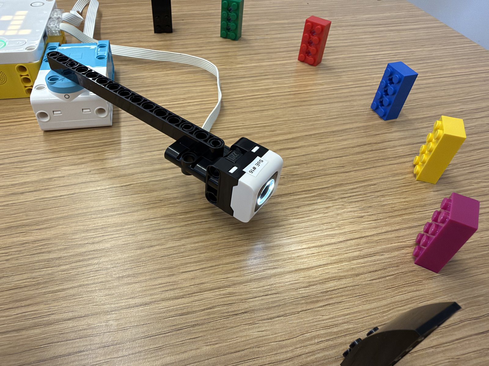
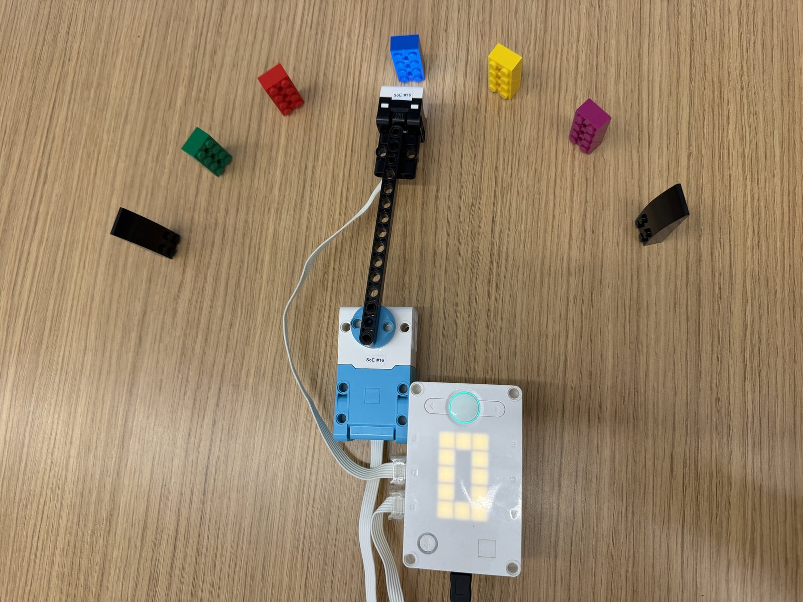

The 1D Color Search challenge was to use reinforcement learning on a LEGO SPIKE Prime robot. A color sensor on the end of a swinging arm scans a row of LEGO bricks, and the robot has to learn to find the green goal brick without running into the black boundary bricks at either end. It starts out knowing nothing about the track.
My robot has a Large Motor on port B that swings the arm and a Color Sensor on port D at the end of the arm, facing the bricks. My track was BLACK, MAGENTA, YELLOW, BLUE, RED, GREEN, BLACK. Before training, I ran the read_color.py setup checker and swept the arm across the whole track three times. Every brick read as the right color and every gap between bricks read NONE, so I didn’t have to change any settings.
The robot runs rl_color_search.py from the RLwithSPIKE repository by Ethan Danahy and the Tufts CEEO. I used it without changes. It uses Q-learning: the state is the color under the sensor, and the action is sweeping LEFT or RIGHT to the next brick. Reaching green earns +10, hitting black earns −10, and every other move costs −1, so shorter paths score better. After every move, the robot updates its Q-table, which holds a score for each move from each brick. I kept the default learning settings: learning rate α = 0.5, discount γ = 0.9, and exploration ε = 0.1.
I trained it for 12 episodes. For each one, I moved the arm by hand to a starting brick and pressed the hub’s right button. It hit the black end in episodes 2 and 4 and found green in the other 10. Episodes 3, 8, 9, 11 and 12 took the shortest possible path. After 12 episodes, LEFT had the higher score on every brick, which is correct because green is at the left end of the track. The scores were highest next to green (9.99 on RED) and dropped the farther a brick was from green (2.55 on MAGENTA), because every extra move costs −1 and future rewards are discounted by γ.
I also tried the live web dashboard, which shows the arm on the track, the Q-table filling in, a map of the track and the steps per episode.

rl_color_search.py):
def learn(self, state, action, reward, next_state, done):
"""The Q-learning update rule:
new Q = old Q + alpha * (reward + gamma * best_next - old Q)
best_next is the best Q-value in the state we landed in: how good
things look from here on. If the episode is over there is no future,
so best_next is 0. Returns (old Q, best_next, new Q)."""
old = self.q[state][action]
if done:
best_next = 0.0
else:
best_next = max(self.q[next_state])
target = reward + self.gamma * best_next
new = old + self.alpha * (target - old)
self.q[state][action] = new
return old, best_next, new